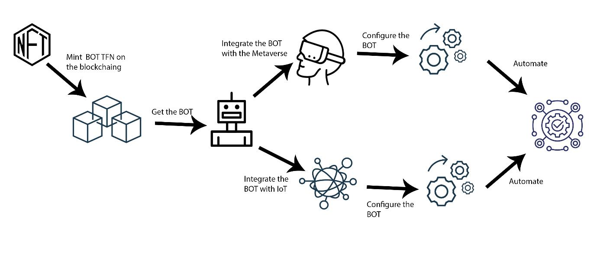

BOT TFN
The BOT TFN project is the first of its kind that lets metaverse users automate the metaverse. The mission is to reduce time and resources spent on the metaverse. Businesses and individuals can utilize the BOT TFN to automate a repetitive task or activity that a person would otherwise perform. Even more so, BOT TFN is considerably faster than humans at these tasks.

How It Works
Any object in the metaverse is an NFT (Non-Fungible Token). NFTs are digital assets that are not convertible into other forms of currency. They usually represent unique items or experiences that can be used on a specific platform. For example, games like CryptoKitties allow users to purchase and trade different digital cats. These assets can only be used within the game and cannot be exchanged for other cryptocurrencies. NFTs offers a new way to monetize digital content and create unique experiences for users. The BOT TFN is an NFT object that can be imported into the metaverse.
Metaverse BOTTFN features
BOT TFN is originally designed for the metaverse, but being a blockchain-based project, it has utilities outside the metaverse. This section discusses the utility of BOT TFN in the IoT space, how it can help improve security and efficiency in connected devices, and some of the potential applications in the nearest future.
Strengthen Access Control
To strengthen security systems, IoT and BOT TFN can function together. An integrated bot system can identify authorized users and open and lock doors to high-risk locations like bank vaults. The collaboration in technologies can also limit or permit access to certain machines. Thus, BOT TFN integrated with IoT can improve compliance, safety, efficiency, and other long-standing issues of traditional IoT.
Improve Safety Compliance
IoT and BOT TFN cab enhance compliance for firms dealing with perishable goods, whether manufacturing or retailing, by ensuring that refrigerated food products do not exceed or go below FDA temperature requirements.
BOTTFN in agriculture
Farmers, particularly those with large-scale operations, may use IoT and BOT TFN to monitor agricultural fields remotely and automate irrigation systems. Livestock owners may use wireless IoT apps to collect information about their livestock's health and well-being, such as when they're unwell, farmers can then automate treatment from machines around the livestock.
BOTTFN in Health
IoT devices and BOT TFN automation can assist doctors and other medical workers in remotely monitoring and administering treatment to their patients, particularly if they are in dangerous situations. They can also assist hospital management in keeping track of assets and notifications, such as the availability of hospital beds.

BOTTFN in Public Sector
BOT TFN integrated with IoT can provide several benefits to governments and service-related sectors. IoT automated apps can assist public sector utilities in traffic control, municipal government, resource management, and public safety.
BOT TFN ROADMAP
| Stage 1 | Stage 2 | Stage 3 | Stage 4 | Stage 5 | Stage 6 | Stage 7 | Stage 8 |
|---|---|---|---|---|---|---|---|
| Preparation for launch: development of website, token and bots | Promotions, advertisements and marketing via social media and search engines | Community Building | ICO on multiple decentralized exchanges | NFT minting and acquisition | Integration into the metaverse | Building partnerships | Maintenance and future upgrades |
Info
Meta's AI researchers are developing a voice-powered bot that will allow users to customize their virtual environments via spoken commands. At a virtual event, Zuckerberg demonstrated an early version of the concept named Builder Bot. It allows you to define a world and then have the Builder BOT produce elements of that world[5]. The meta Builder BOT is a glimpse of what BOT FTN aims to create for the metaverse. The BOT TFN is a blockchain-based project and is usable on the open metaverse and other Web3.0 projects.
Social Info